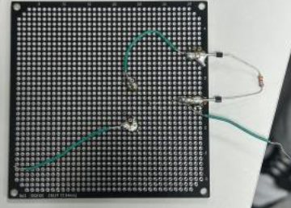
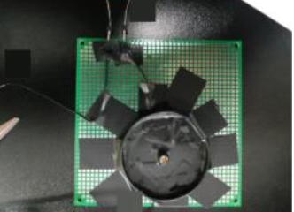

Measuring Optical Responses of Display
We built a soldered photo-sensor using a photo transistor to measure a monitor’s optical response. By capturing rising and falling waveforms across gray levels, we analyzed step responses and distinguished drive methods—most notably PWM vs PAM

My role: sensor fabrication & wiring, oscilloscope data capture, waveform analysis, documentation.
-
Hardware & Tools
NPN photo transistor (BJT), resistors (6.8k/15k/56k/82kΩ), breadboard/proto board, power supply (5–30V), oscilloscope, shielding (paper cup + tape)
-
Method (Brief)
We built a photo sensor, attached it to the display, and captured waveforms under different gray levels by varying resistance and supply voltage. From these measurements, we extracted rising/falling times and analyzed step responses.
  -
Key Findings
• Drive modes: The test monitor’s waveform width changed with brightness → PWM; the reference monitor scaled amplitude more linearly → PAM.
• Panel behavior: TN/VA panels showed step responses due to dynamic capacitance; IPS minimized them, enabling faster target luminance without “stairs.”
• Resistor choice: For crisp on/off (LED switching), smaller R (≈6.8kΩ) produced steeper edges. For optical luminance tracking vs gamma, 56kΩ best matched the curve with minimal saturation.
• Supply choice: Around 20V VCC gave the closest gamma alignment among the tested values (5–30V).
• Mitigation: Overdrive (briefly overshooting the target voltage) can reduce response time and perceived step artifacts. -
Outcome
We verified step responses across gray levels, quantified rising/falling times, and explained why PWM vs PAM and TN/VA vs IPS produce distinct waveform signatures. This informs sensor setup choices (R, VCC) and display tuning (e.g., overdrive LUTs).
Project Summary (Short)
We measured a monitor’s response with a hand-built photo sensor, plotted rising/falling waveforms per gray level, and used the data to differentiate PWM vs PAM driving and TN/VA vs IPS panel behavior. We also determined practical sensor settings (resistor & supply) and discussed overdrive as a way to reduce step responses.